Image Warping and Mosaicing
CS280A Project 4 · Part A
Benny ChenYu Wan
This project combines overlapping photographs using manually selected correspondences, least-squares homographies, inverse warping, and feathered blending. It also rectifies two planar surfaces and compares planar and cylindrical mosaics.
A.1 — Shoot and Digitize Pictures
The three input sets show a church interior, a brick building, and a building under construction. The first photo was web searched and the last 2 sets are my photos. The overlap provides architectural features for manual matching. The building images were resized to a maximum dimension of 1600 pixels before selecting points.
Set 1: Church interior


Set 2: Brick building

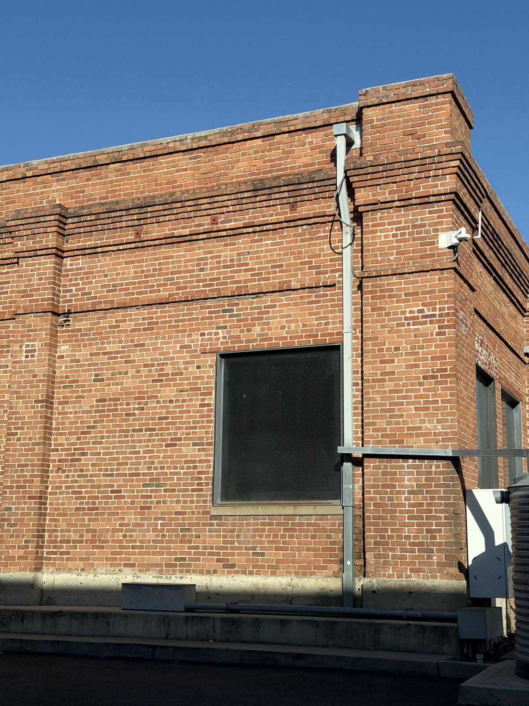

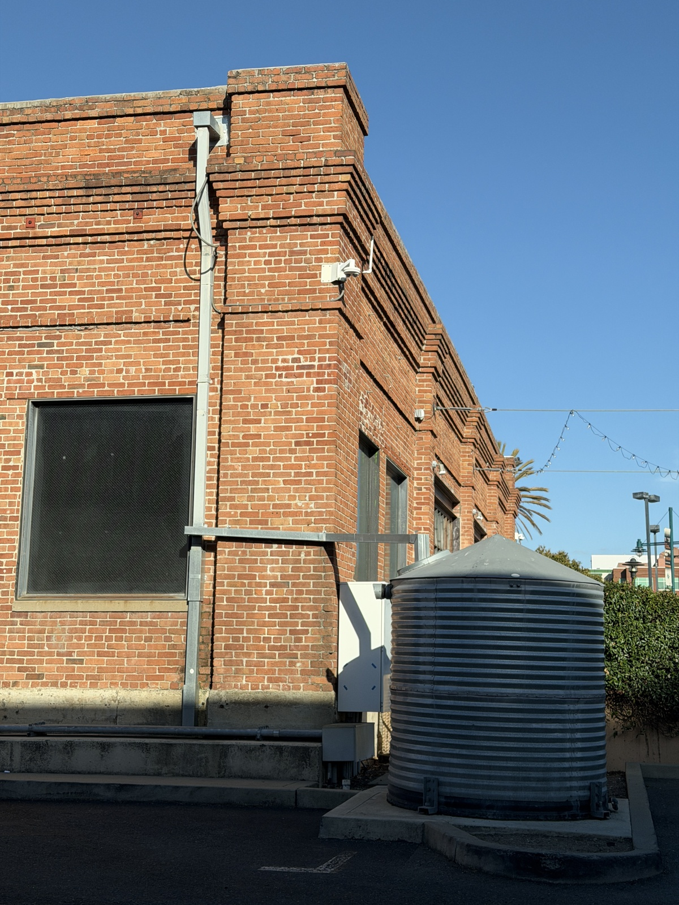
Set 3: Building under construction

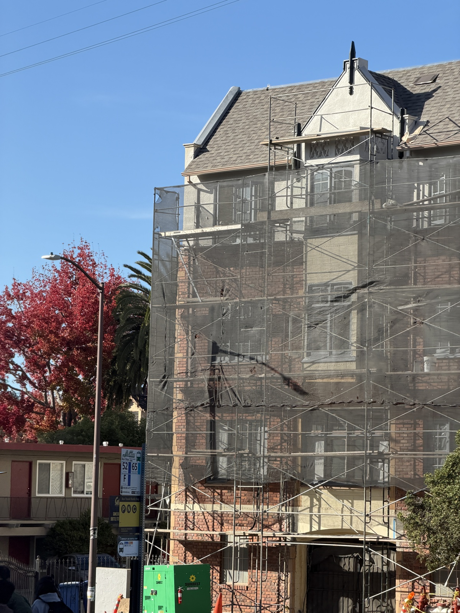

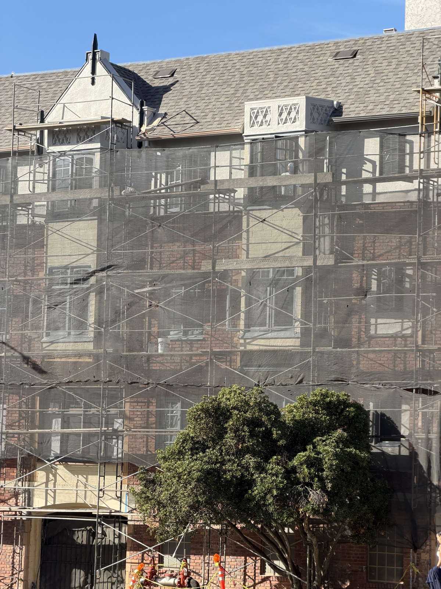
A.2 — Recover Homographies
I selected 8 matching points per church pair and 12 per building pair. Coordinates are (x, y), with integer coordinates at pixel centers. H maps a source image into its reference image: a2, b2, or c2.
u = (h11 x + h12 y + h13) / (h31 x + h32 y + 1) v = (h21 x + h22 y + h23) / (h31 x + h32 y + 1) [x y 1 0 0 0 -ux -uy] h = u [0 0 0 x y 1 -vx -vy] h = v
Stacking these two rows for every match gives Ah = b. I solve the overdetermined system with least squares and reshape the eight unknowns into H with h33 = 1.
Set 1: image 1 → image 2
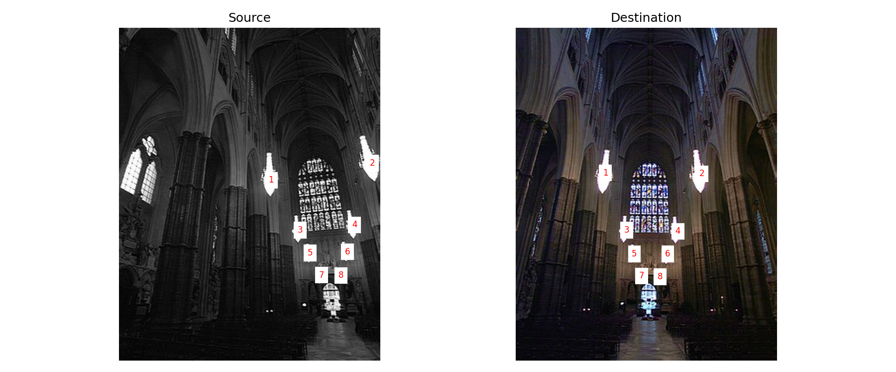
[ 1.546052 -0.141461 -218.105914 ] [ 0.505987 1.492656 -255.342902 ] [ 0.000753 0.000179 1.000000 ]
Reprojection RMS on the selected matches: 1.77 pixels. This is a fitting error, not an independent accuracy test.
Set 1: image 3 → image 2
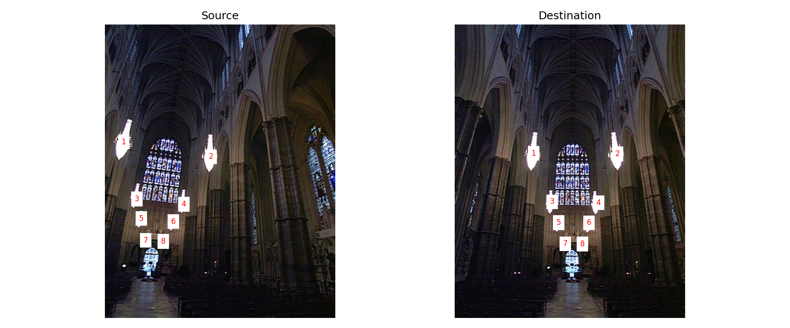
[ 0.669718 0.016756 143.689845 ] [ -0.244450 0.638846 113.323589 ] [ -0.000356 -0.000319 1.000000 ]
Reprojection RMS on the selected matches: 2.31 pixels. This is a fitting error, not an independent accuracy test.
Set 2: image 1 → image 2
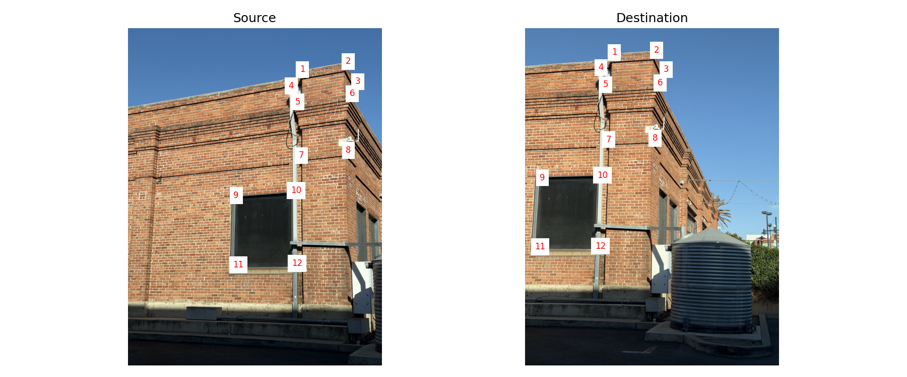
[ 1.128245 -0.031764 -468.422866 ] [ 0.135022 1.127791 -203.985114 ] [ 0.000110 0.000029 1.000000 ]
Reprojection RMS on the selected matches: 5.28 pixels. This is a fitting error, not an independent accuracy test.
Set 3: image 1 → image 2
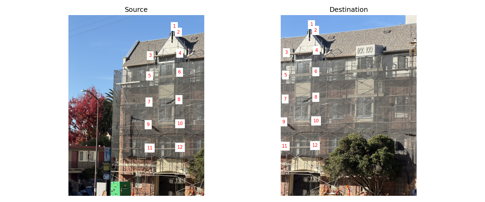
[ 0.975986 -0.016621 -648.562282 ] [ -0.014910 0.958622 -0.759739 ] [ -0.000031 -0.000010 1.000000 ]
Reprojection RMS on the selected matches: 7.60 pixels. This is a fitting error, not an independent accuracy test.
A.3 — Warp Images
For each output pixel I apply inverse H, then sample the original image. Nearest-neighbor interpolation rounds to the nearest pixel. Bilinear interpolation combines four neighboring pixels using their fractional-distance weights.
The four source corners are ordered top-left, top-right, bottom-right, bottom-left and mapped to (0,0), (W−1,0), (W−1,H−1), (0,H−1). The width-to-height ratios below are assumptions rather than measured dimensions, so these examples demonstrate rectification under those assumptions rather than verified metric recovery.
1. Bike-lane marking
Output: 400 × 800; width/height = 0.5.
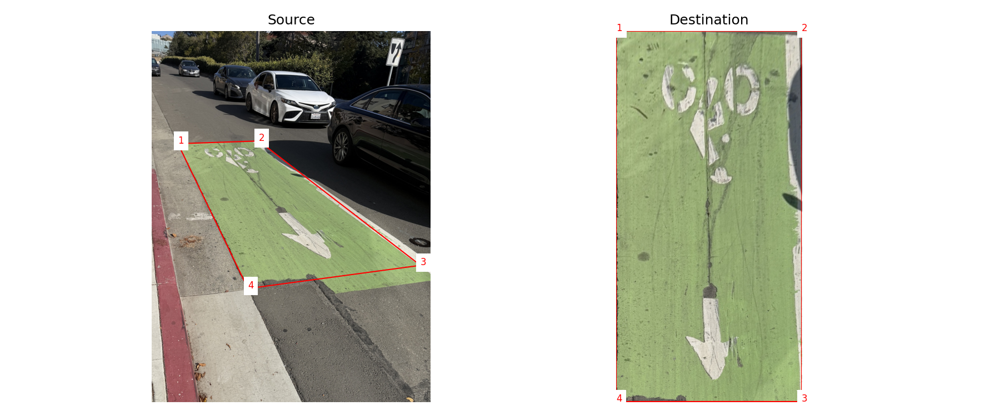

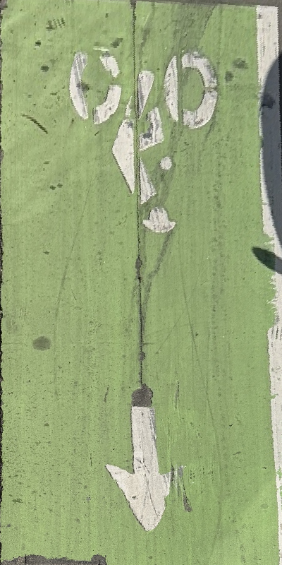

Recovered homography:
[ -10.843670 5.230211 -1318.001029 ] [ -1.030617 -30.689480 15006.905211 ] [ 0.000764 -0.023154 1.000000 ]
2. Noodle-box top face
Output: 800 × 800; width/height = 1.0.
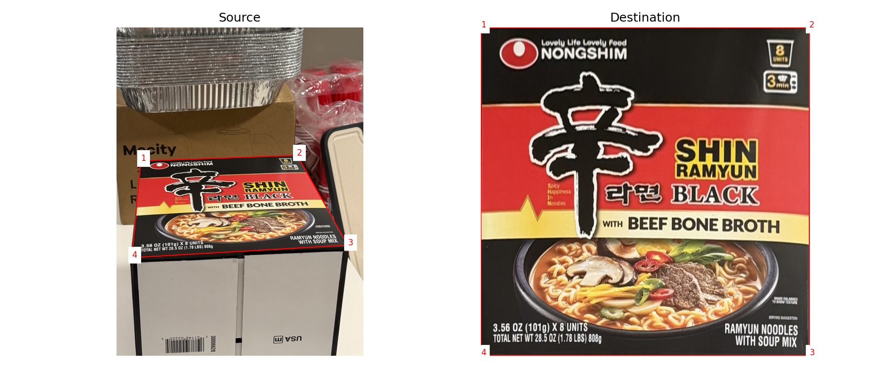


Recovered homography:
[ 2.253318 0.204847 -398.355806 ] [ 0.189303 5.273441 -3450.802058 ] [ -0.000038 0.001876 1.000000 ]
| Example | Nearest neighbor | Bilinear |
|---|---|---|
| Rectification 1 | 33.97 | 47.28 |
| Rectification 2 | 35.16 | 95.15 |
Nearest neighbor is faster but can be less in quality. Bilinear interpolation smooths those transitions, with some softening of fine detail.
A.4 — Blend Images into a Mosaic
I keep the second image as the reference, compute a shared canvas, and inverse-warp all sources using bilinear interpolation. Each source receives a weight based on distance to its nearest edge, with larger weights in the interior. The warped colors are combined using a normalized weighted average:
mosaic(x,y) = sum(weight_i(x,y) × color_i(x,y)) / sum(weight_i(x,y))
Only valid pixels contribute. The irregular outside boundary is transparent, rather than missing black image content.
Mosaic 1: Church interior
Source images are shown in A.1, Set 1.
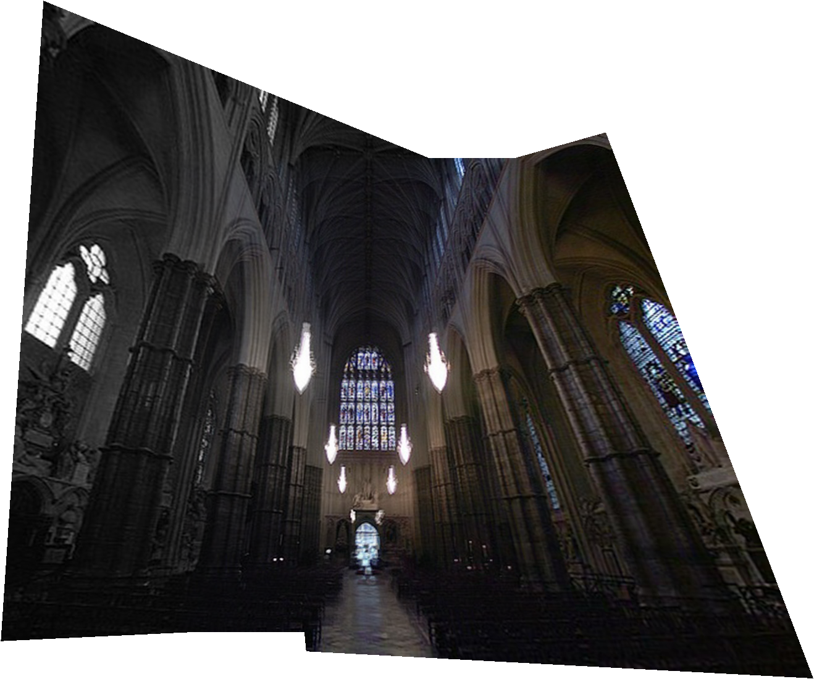
Mosaic 2: Brick building
Source images are shown in A.1, Set 2.
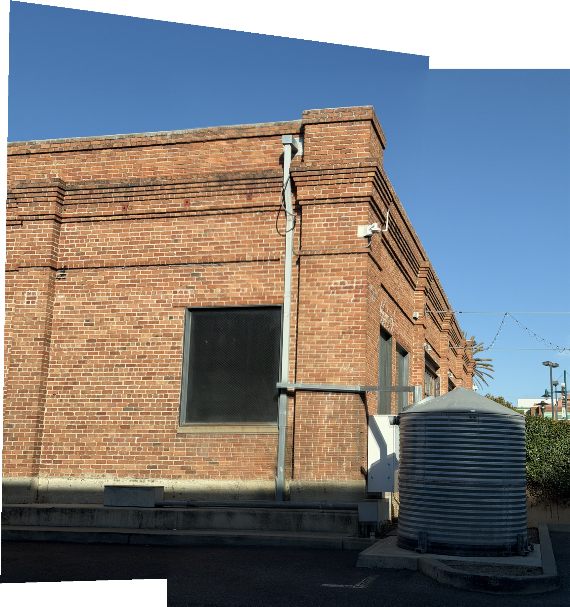
Mosaic 3: Building under construction
Source images are shown in A.1, Set 3.
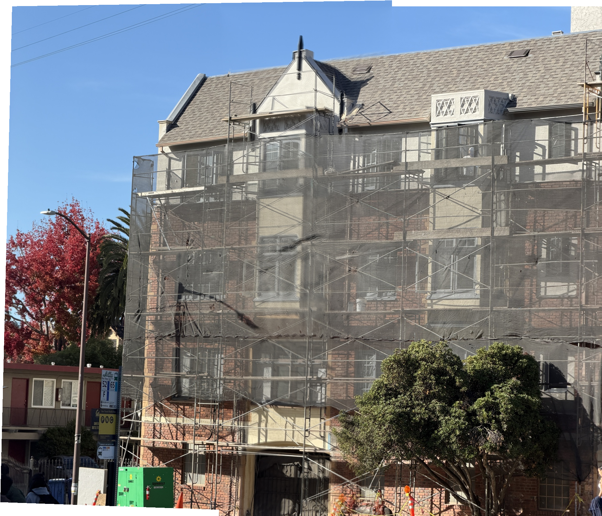
Feathering reduces abrupt seams, but it does not give better picture. The worse figure might because the points choosen mannually.
A.5 — Bells & Whistles: Cylindrical Mosaics
I reused the church correspondences and homographies to render the full mosaic onto a cylinder. For a cylinder pixel (u,v), relative to the cylinder origin, I first recover its reference-plane position:
theta = u / f x = f tan(theta) + cx y = v / cos(theta) + cy source_position ∝ inverse(H) [x, y, 1]ᵀ
Here (cx,cy) is the center of the reference photo and f is in reference-image pixels. I sample each original photograph directly with bilinear interpolation, then feather the samples together. This avoids resampling an already blended planar image. The focal lengths are visual choices, not camera calibration estimates.
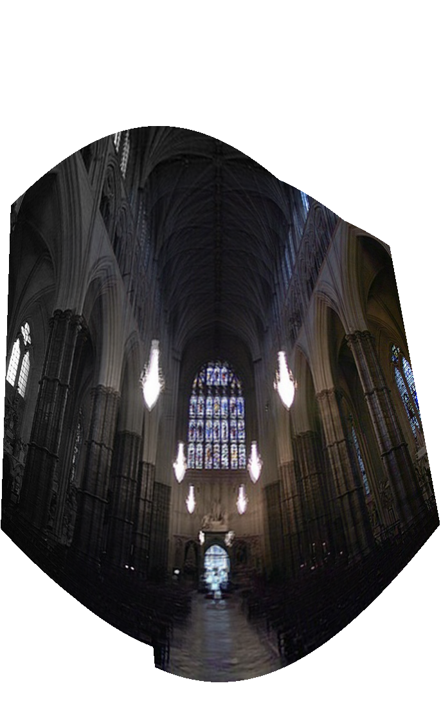
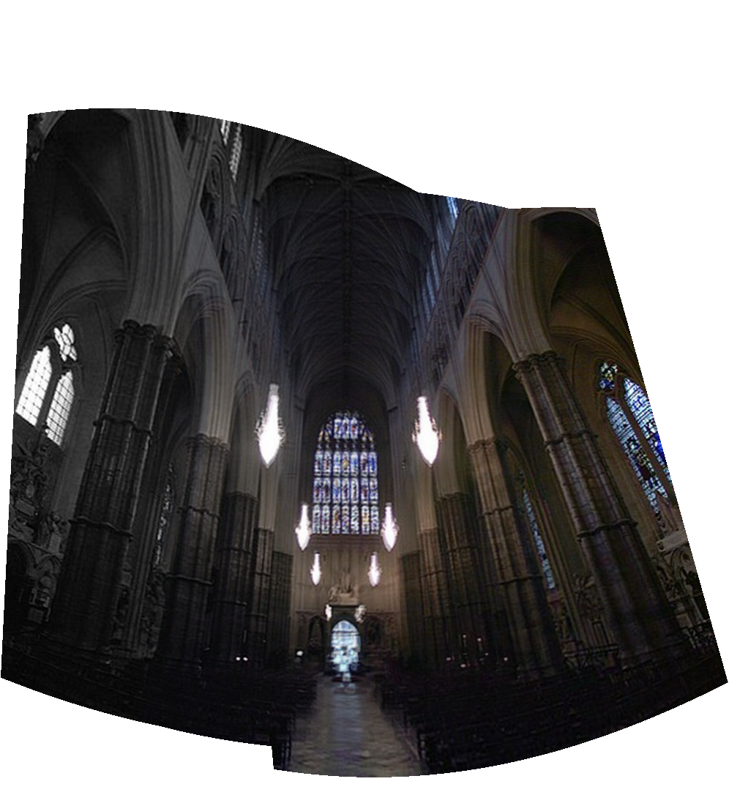
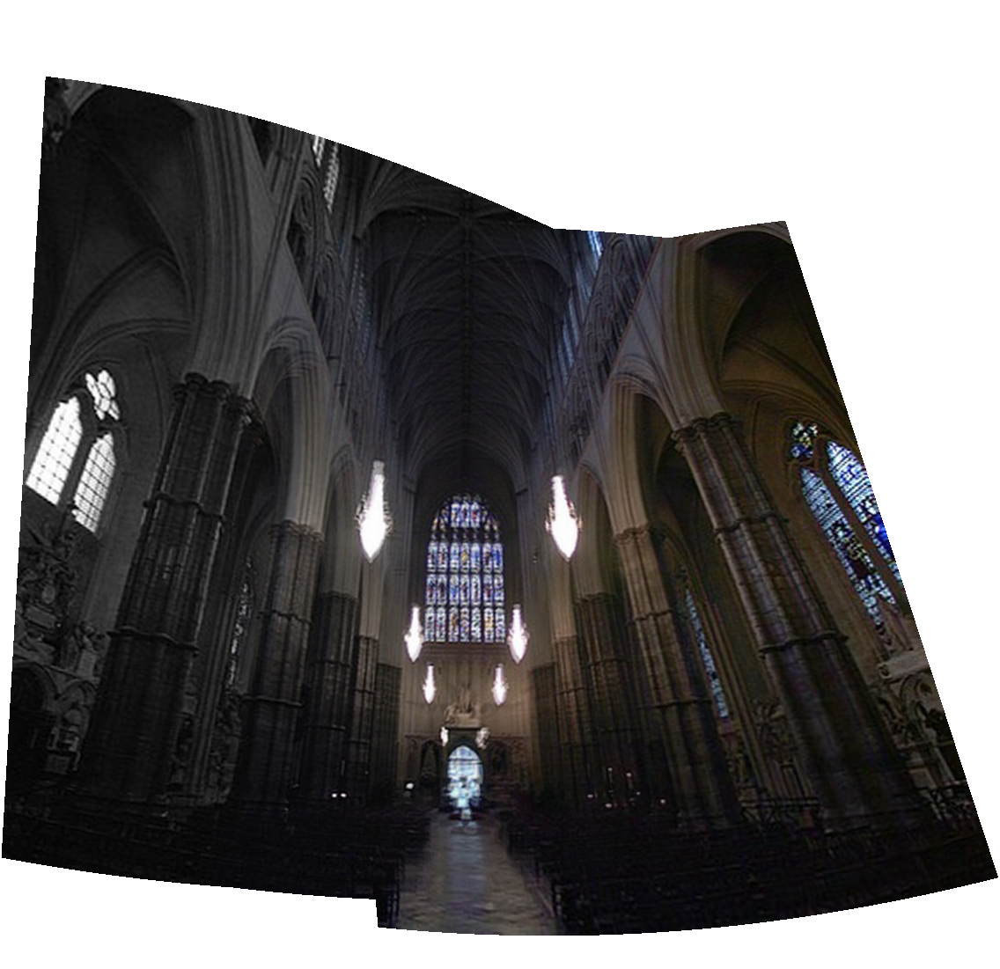
The smaller focal length compresses the sides more strongly. At 900 pixels the geometry is closer to the planar mosaic. Projection changes the shape of the panorama but does not fix the original alignment error.